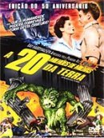

+ Velozes + Furiosos
Ano: 2003
Após deixar a polícia, Brian O'Conner (Paul Walker) é forçado a participar de uma nova missão: se infiltrar no crime organizado de Miami de forma a investigar sobre o transporte de dinheiro sujo para Carter Verone (Cole Hauser), o chefe do tráfico local. Para tanto ele recebe a ajuda de seu ex-colega Roman Pearce (Tyrese) e da agente secreta Monica Clemente (Eva Mendes).
Categorias:
Atores:
- Paul Walker
- Tyrese
- Cole Hauser
- Eva Mendes
- Ludacris
- Fabolous
- Jin
- Lahmard J. Tate
- Thom Barry
- James Remar
- Devon Aoki
- Eric Etebari
- Matt Gallini
- Roberto Sanz
- Mark Boone Junior
- Edward Finlay

A 20 Milhões de Milhas da Terra
Ano: 1957
Estrelando William Hopper e Joan Taylor. Frank Puglia, John Zaremba, Thomas B. Henry, Tito Vuolo, Jan Aevan, Arthur Space, Bart Bradley. O gênio dos efeitos especiais Ray Harryhausen (Jason and the Argonauts, Clash of the Titans) apresenta um dos seus primeiros inovadores trabalhos, disponível pela primeira vez em vibrantes cores! Quando uma espaçonave americana cai na costa da Sicília, o time de resgate descobre que a tripulação trouxe consigo uma massa gelatinosa que logo se transforma em uma estranha criatura bípede que rapidamente aumenta de tamanho. Ao atingir sete metros, a criatura invade Roma e antes de ser destruída procura refúgio no Coliseu.
Categorias:
Atores:
- William Hopper
- Joan Taylor
- Frank Puglia
- John Zaremba
- Thomas Browne Henry
- Tito Vuolo
- Jan Arvan
- Arthur Space
- Bart Braverman
- Sid Cassel
- James Dime
- Noel Drayton
- Darlene Fields
- Michael Garth
- Ray Harryhausen
- George Khoury
- Saverio LoMedico
- Rollin Moriyama
- Don Orlando
- George Pelling
- Jerry Riggio
- Barry Russo
- John Sorrentino
- William Woodson